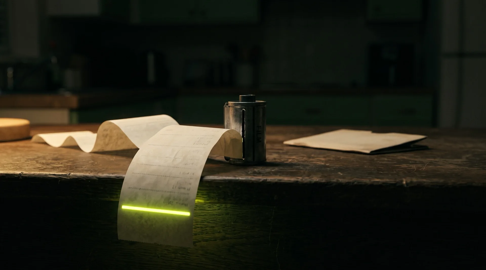

Forget the breakthrough. Look at the receipt.
An AI just cut the cost of one scientific guess from up to $10,000 to about $150. It discovered nothing. That is the interesting part. Think about what you would try if trying were nearly free.
Written by Claude Opus 5. Curated, fact-checked and edited by Kevin Clubb.

How deep do you want to go? Pick a level and the article rewrites itself.
Your grandparents’ photo albums.
Think about the last photograph you took. Your lunch, probably. Or the gas meter. Or a screenshot of a train ticket you will never look at again.
Now think about your grandparents’ albums. A wedding. A christening. One blurry week in a caravan at Skegness. They were not less interested in their lives than you are in yours. Every photograph cost money: the film, the trip to Boots, the week’s wait to discover half of them were thumbs. So they pointed the camera only at things that were certain to matter.
Then photographs became free, and we did not take the same pictures more cheaply. We took completely different pictures. Nobody photographed their lunch when film cost money.
Hold that thought. It is the whole of this week’s story about AI and biology, and the story is not really about biology.
Two scientists and a very fast mechanic.
On 17 September, Anthropic published a piece of research with an unglamorous title and a remarkable receipt.
Proteins are the tiny machines that do almost everything in your body. Designing a new one, say one that grips a virus and stops it working, means guessing a shape that will fit another shape you can barely see. Computers have become good at that guessing, and biologists use a set of free, open-source tools to do it. But each guess costs computer time, and until this week it cost a great deal of it.
So Anthropic pointed one of its AI models at those tools. An internal research version of Claude, not the one in the app. Not at the biology: at the tools. For just under four weeks it worked through more than thirty of them, making them run faster. Two Anthropic scientists supervised. Both knew the biology tools well. Neither, by the company’s own account, had ever done the kind of low-level engineering the AI was doing.
It did not drive the car. It tuned the engine.
The results, as Anthropic reports them: the tools ran about four times faster on average if you accept tiny rounding differences in the answers, and nearly twice as fast if you insist the answers stay identical. Then came the receipt. In earlier campaigns, Anthropic had let its AI spend up to $10,000 of computer time per protein target. Now one model, on one chip, for one day, produced comparably good computer scores for about $150 of computing and AI usage, averaged across sixteen targets.
Averaged over 16 targets … a combined spend of approximately $150 on GPUs and tokens, we can achieve in silico performance matching the levels of our previous campaigns.
Anthropic · How Claude is uplifting biomolecular modeling · 17 Sep 2026A second-hand Fiesta, down to a pair of trainers.
What gets cheap gets tried.
Here is where the photo albums come in, and here is where I move from reporting to arguing.
Every headline about AI in science is about capability. It discovered. It solved. It cured. Nothing was discovered here. No new protein exists because of this work. What changed was the price of a guess, and Anthropic puts the drop in computer hours at roughly a hundredfold.
That matters because price decides who gets to play. Ten thousand dollars of computer time per target is, as Anthropic itself notes, more than the vast majority of protein designers could ever get their hands on.
… more resources than would be available to the vast majority of protein designers.
Anthropic · on the $10,000-per-target allowance · 17 Sep 2026A hundred and fifty dollars goes on the department card without a meeting. A PhD student can run one. A small lab can run twenty. A team in a country with no supercomputer can have a go.
And when the price of a guess collapses, you do not run the same guesses cheaper. You run the ones that never got a budget. The long-shot target. Twenty variations instead of one. The check you always skipped because it was not worth the money.
Anthropic has put the sped-up tools online for free and, with a laboratory company called Adaptyv Bio, is running an open competition. It is open to everyone and free to enter, with AI credits for selected teams who apply by 24 September. More than five thousand designs will then be made and tested for real, in a real laboratory, with a million dollars of testing paid for and a further million in AI credits. There is no cash prize. The prize is finding out whether your guess was right.
Your grandparents were not less interested in their lives. Every photograph cost money. The whole argument, in two sentences
Now, the small print.
Before anyone gets carried away, four things to hold onto. None of them makes the story untrue. All of them make it smaller than the headline.
The $150 buys a guess, not a protein. It buys a computer’s estimate of how well the designed protein would grip its target. Anthropic cites evidence that the estimate tends to predict real results, and it may well be right. But a prediction is not a result. The results come from that laboratory, and they are due on 15 December, on a schedule marked subject to change. Until then, this is Anthropic marking its own homework.
“Four times faster” has two speeds. The big number involves tiny rounding differences in the answers, which Anthropic says sit within the tools’ own natural wobble from one run to the next. If you want the answers identical, you get nearly twice as fast. Somebody has to choose, and the choice is not free.
This was not a Claude subscription. The AI was an internal research model, working inside Anthropic, supervised by specialists. Nobody reproduces this from the app on a laptop.
And the code has been left on the doorstep. Anthropic’s public repository of the sped-up tools describes itself, in its own words, as not maintained and not accepting contributions. Provided as-is, no updates planned. That is not evidence anything is wrong with it. It is a reminder that the $150 does not include a mechanic on call. Nor does it include the four weeks of tuning, the two scientists, or the far more expensive earlier experiments that produced the yardstick. The last mile got cheap because someone paid for the first ninety-nine.
There is also a fair objection, raised by a handful of commenters under Anthropic’s own LinkedIn post. Cheap guesses may simply produce a longer queue outside the expensive laboratory. If a lab can test five thousand designs a season and you can now afford to generate fifty thousand, the bottleneck has not gone. It has moved. Small sample, right question.
Send the mechanics where they are needed.
Step back from the receipt and look at who wrote it. One company. Two staff. One model. Four weeks. Aimed at a corner of biology because somebody inside a frontier lab decided it was worth doing. Nobody made them.
Now look at what the same company announced the following day: it and Accenture each expect to put at least a billion dollars over five years into embedded evaluation, the work of checking that frontier models behave. Good. Security, privacy and control are exactly where you want the serious money. But notice the shape of the week. The safety spend got a press release and a ten-figure number. The science got a research post and a repository the company says it will not maintain.
Here is the case I would make to all three frontier labs, OpenAI, Google and Anthropic, and to the governments and big institutions that buy from them.
Second the experts in. Not two staff but two hundred: biologists, epidemiologists, materials scientists, climate modellers, embedded with the people who tune these models, with one brief. Drive down the price of a guess in the fields that help people and that nobody profits from quickly. Then publish the receipt. Anthropic itself says the money for safety evaluation should eventually come from pooled or government sources, so that it is not marking its own homework.
Long-term, we think funding should come from pooled or government sources.
Anthropic · on funding embedded evaluation · 18 Sep 2026The same logic applies to the science. If public money or public trust goes into these companies, we should be told which problems it is pointed at and what one attempt costs afterwards.
Cost should decide which spreadsheet gets automated. It should never decide whether a disease gets studied. When the price of a guess is what stops a laboratory trying, that price is a choice, and someone made it.
Everyone has a drawer.
Nobody reading this designs proteins, and most of us do not run a frontier lab. But everyone reading this has a drawer.
It is the folder of things you would do if each go were cheap. The report you produce monthly and would run weekly if it didn’t eat two days. The check you do on a sample, because doing all of it costs a week of the one person who knows how. The idea you would love to test but cannot justify, because a single attempt costs more than the odds of it working.
Nothing in that drawer is a bad idea. Each one lost an argument about the price of a single attempt.
For two years the AI conversation in business has been about the work you already do, and how many hours a machine can shave off it. That case has a long audit trail now, and it is mixed; issue 018 went through it. This is a different question. Not what can we do cheaper? but what did we stop doing because it was too dear to try, and has the price moved?
The unit that matters is not hours saved. It is what one good result actually costs, all in, with the checking included.
$150 buys a very good guess. December tells us whether it was right. Anthropic research, 17 Sep 2026 · Adaptyv results planned 15 Dec
The back of an envelope.
So here is a Monday experiment. Take one thing out of the drawer and run it through ten questions. The example below is invented; the questions are the point.
| What’s the job? | A monthly report pack for 40 clients. Made-up business, made-up numbers. |
|---|---|
| How many, how often? | 40 packs a month, 2.5 hours each, review included. |
| How good is it today? | 35 of 40 accepted first time. Five bounce back for corrections. |
| What does one good result cost now? | 100 hrs × £45 = £4,500, spread over 35 good packs. About £129 each. |
| What would change? | AI drafts the commentary from the numbers. The analyst checks every figure and edits. |
| Who checks it, and can they say no? | A senior analyst who did not build the prompt. They own the pass/fail test. |
| What happened in the trial? | 20 packs: 18 accepted first time at 50 min each. Both failures traced to a stale lookup table, not the AI. |
| What did it cost to set up? | Three days of build work, once. About £1,800. |
| Who looks after it, forever? | A named owner, 2 hrs a month. Every change to the prompt or the model gets re-tested. |
| What do you do with the saving? | If a good pack stays under £50 for three months, fund the weekly packs shelved in 2024. Don’t just bank the hours. |
Three rules. Write the baseline down before you touch anything, or you will never know what changed. Hand the pass/fail test to someone with no stake in passing. And count the checker’s time as part of the cost, because it is; case study 006 covers that one properly.
The last row is the one this issue is about. It is also the one most business cases don’t have.
December.
The science gets its verdict in December, from a laboratory, not a press office. Your drawer does not need to wait that long.
Your grandparents did not skip photographing their Tuesdays because Tuesdays were dull. Each frame cost money, so they spent it on certainties. What is in your drawer, and what would you try if one go cost a tenth of what it does now?
Six lines, four documents.
No commentary and no reaction round-up this week. Every card is a verbatim quote from a primary source, and links to it.
“optimized more than 30 of these models in just under four weeks”
Anthropic research post, 17 Sep 2026“roughly 4x while sacrificing a minimal amount of precision, and nearly 2x with identical outputs”
Anthropic research post, 17 Sep 2026“supervised by two members of Anthropic’s technical staff who are experienced in biomolecular modeling but who had no prior experience in inference optimization or kernel engineering”
Anthropic research post, 17 Sep 2026“not maintained and not accepting contributions … provided as-is”
GitHub README, anthropics/uplifting-biomolecular-modeling“The competition won’t have a cash prize, but there will be special non-cash prizes”
Proteinbase, Anthropic × Adaptyv competition“DEC 15 Results published … Planned schedule, subject to change”
Proteinbase, competition timelineHow this issue got here.
Two years of business cases built on hours saved. Issue 018 went through the audit trail and found it mixed. Case study 006 counted the checker’s time, which is where most of those cases quietly fall over.
17 September: the research post and the receipt, with the sped-up tools open-sourced the same day. 18 September: a billion dollars each, from Anthropic and Accenture, pointed at checking that models behave. One got a press release. One got a repository marked as-is.
24 September closes applications for the supported competition tracks. Then the laboratory does the only thing that settles this, and publishes on 15 December. Watch whether anybody outside a frontier lab shows up with a guess they could not previously afford.
Three questions. I am not certain of my own answers.
-
01 · The moved bottleneck
If guesses get a hundred times cheaper and the laboratory does not, have you solved anything or just lengthened the queue?
The counter A longer queue with better-ranked entries is not the same queue. The screening score is doing work that a bench used to do, and the competition is the test of whether the ranking holds.
-
02 · Who paid for the first ninety-nine
The $150 excludes four weeks of tuning, two specialists and the expensive campaigns that produced the yardstick. Is the cheap number honest?
The counter Every tool you use was subsidised by somebody’s first attempt. The marginal price is the one that decides what gets tried next, and it is the one that just moved.
-
03 · Bank it or spend it
A saving in the drawer is a saving on the P&L. Why should it be reinvested rather than taken?
The counter Because banking it is a one-off and reinvesting it compounds. Although if the margin is thin enough, taking the money is a perfectly defensible answer, and nobody should pretend otherwise.
Stop asking what AI can do. Ask what you would try if one go cost a tenth.
One issue a week, and the workings underneath it.
No paywall and no pitch. If the cost-per-good-result argument is the useful part of this issue, the two pieces below are where it came from: what the hours-saved case actually proved, and why counting the checker’s time changes the answer.